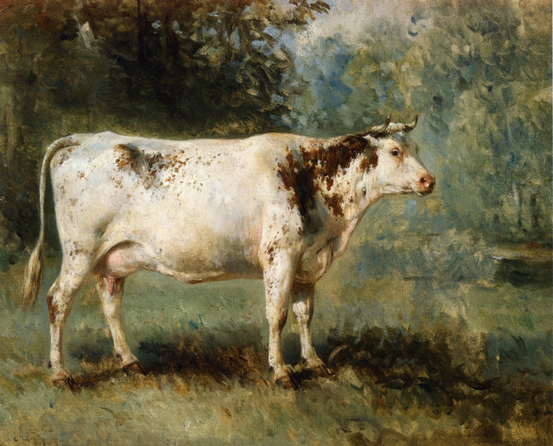

Accessible Soundscapes for Visual Art
Automatically generated musical soundscapes that enhance the aesthetic experience of visual art for blind and low-vision gallery visitors.

// 01Overview
This project investigates how automatically generated musical soundscapes can enhance access to the aesthetic experience of visual art for people who are blind or have low vision (BLV).
Traditional museum accessibility tools focus on factual description but often fail to convey the emotional and atmospheric qualities that sighted patrons experience. This work explores whether AI-generated soundscapes can bridge that gap, evaluated with 10 BLV participants in a qualitative study.
// 02Research questions
- How do automatic musical soundscapes affect BLV users' aesthetic experience of artworks?
- What system and interaction design requirements are needed to ensure soundscapes are meaningful, accurate, and enjoyable?
// 03Approach
A two-stage prototype — emotion-based music generation and contextual sound effects — evaluated in a 33-participant pilot study, then an in-depth qualitative study with 10 BLV participants.
Emotion-Based Music Generation
A deep learning classifier predicts the painting's perceived emotion, mapped onto the valence-arousal model. Magenta's Music Transformer then generates symbolic music matching that emotional tone from an annotated MIDI database.
Contextual Sound Effects
YOLOv3 detects foreground objects in the painting; corresponding sound effects are retrieved from a custom database and mixed into the musical output to convey scene-setting and object awareness beyond emotion.
Pilot Study
33 participants (mostly sighted, 5 low vision) validated the prototype: emotional accuracy 60%, foreground sound effect accuracy 92%. Positive results motivated the in-depth study with BLV users.
In-Depth Qualitative Study
10 BLV participants (5 blind, 5 low vision) engaged in semi-structured interviews after interacting with the system, exploring emotional impact, contextual accuracy, and preferences for combining soundscapes with traditional accessibility methods.
// 05Key outcomes
Immersive emotional engagement
Musical soundscapes added a more immersive, emotionally engaging layer than description alone, helping build stronger connections to artworks through mood and atmosphere.
Support narrative storytelling
Participants wanted soundscapes that conveyed the narrative of the painting — not just emotional tone but also story and scene context that description alone could not capture.
Improve contextual accuracy
Both musical emotion matching and foreground sound effects need higher accuracy; mismatches between the painting's content and generated sounds broke immersion and reduced trust.
Customisation is important
BLV users have diverse needs — allowing adjustment of music type, sound effect prominence, and playback style would significantly improve the experience for different users.
Complement other methods
Soundscapes are most effective when used alongside audio descriptions and other accessibility tools, not as a standalone replacement for existing accessibility infrastructure.